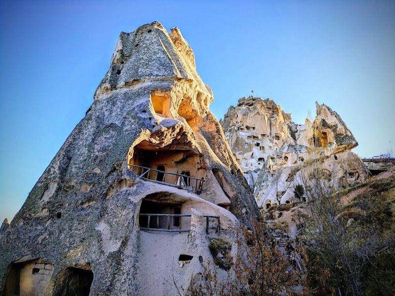
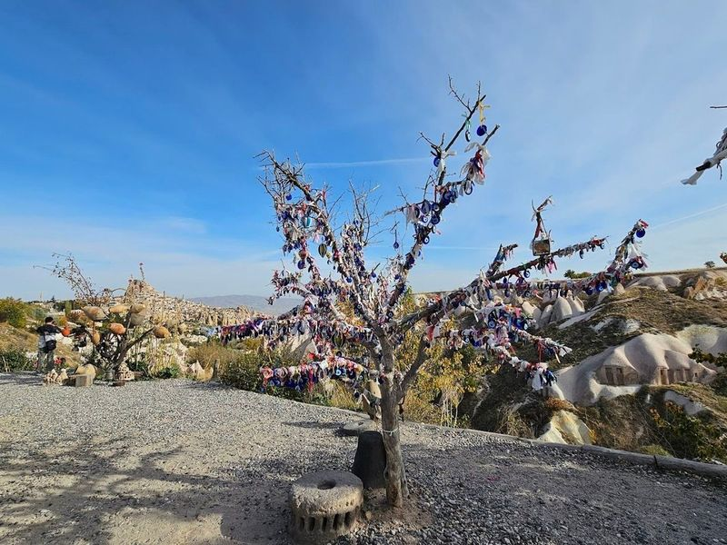
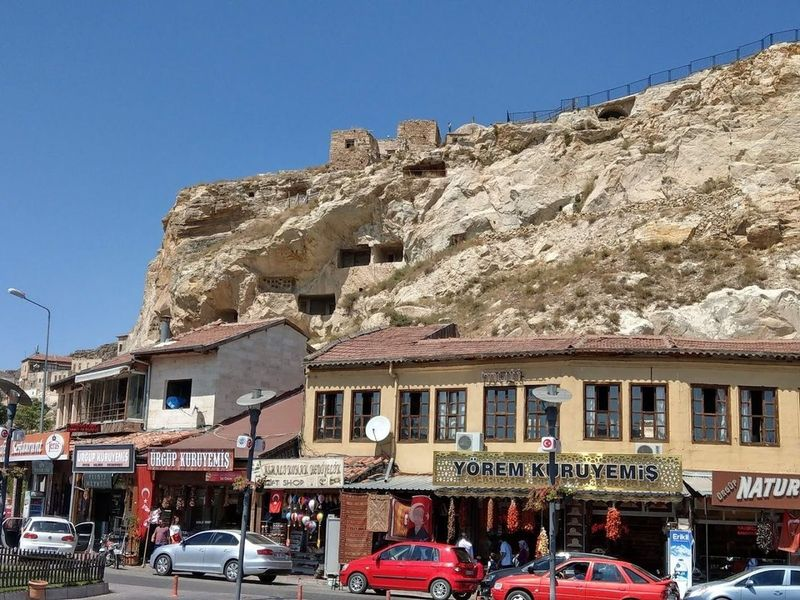
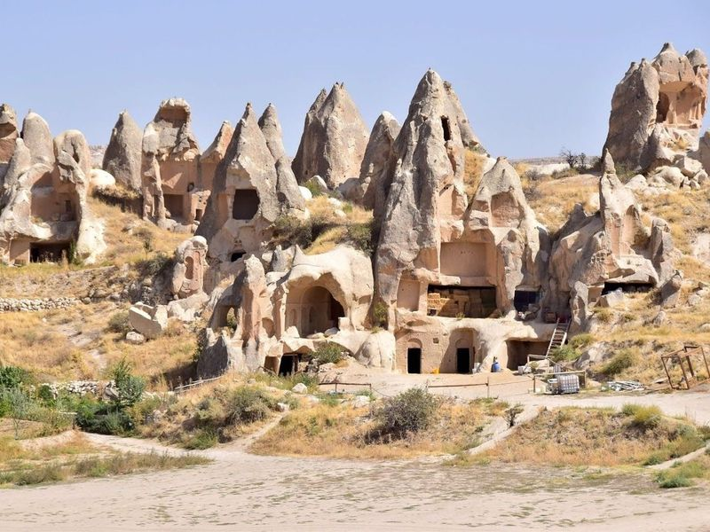
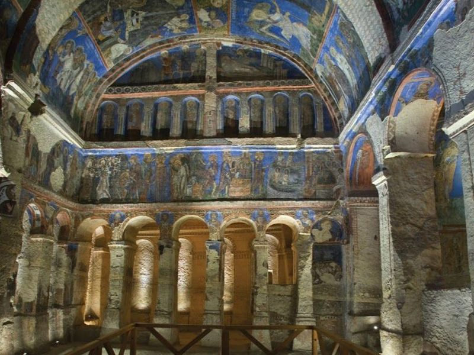
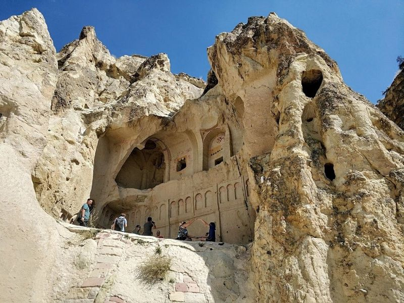
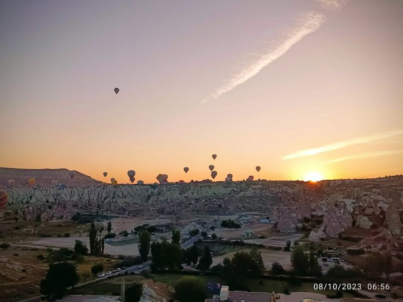
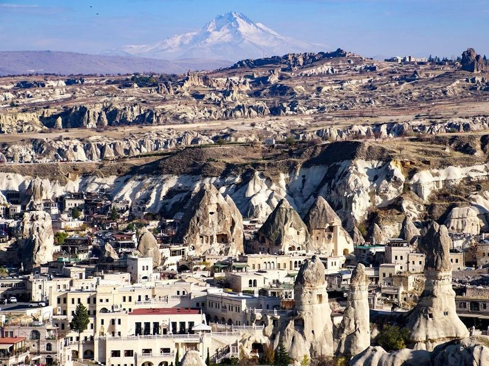
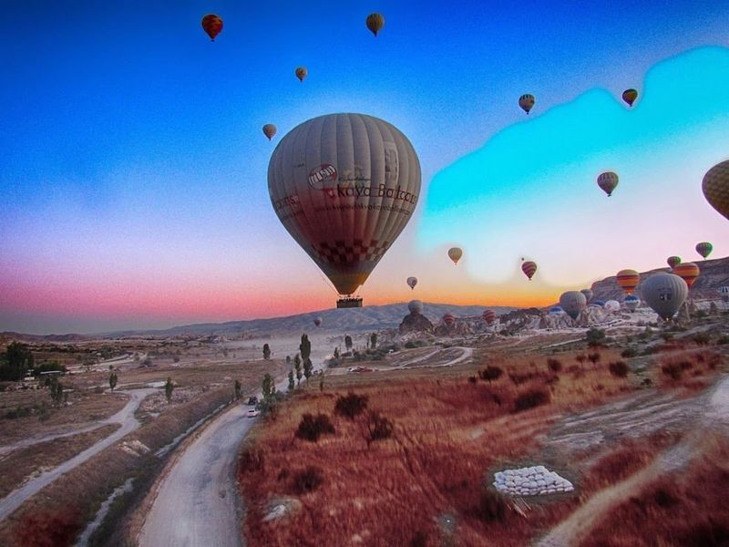
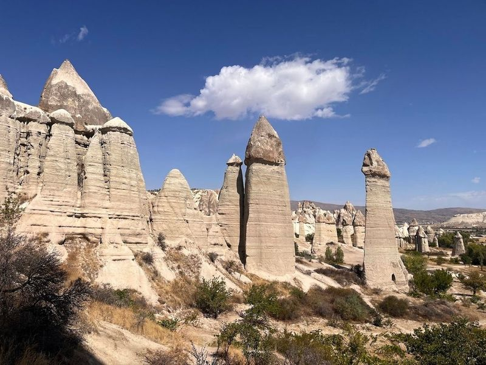

Explore Göreme
A Brief History
Göreme Valley in Cappadocia preserves Byzantine rock-cut churches and monasteries from the ninth to thirteenth centuries, when Christians carved sanctuaries into soft volcanic tuff. Fairy chimneys and painted chapels record monastic life along Anatolian trade routes under Seljuk and Ottoman rule. Open-air museum trails and cave dwellings link painted chapels to Cappadocian valleys beneath volcanic cones.
Attractions Map
Top Sights & Activities

Uchisar Castle
Uchisar Castle is a centuries-old citadel situated on a rock spur, offering panoramic views of Cappadocia. This 200ft-high turret of golden volcanic rock has been shaped by both natural elements and human hands over the years. The ascent to the top takes you through tunnels and caves that were once used as shelters during attacks, showcasing remnants like livestock mangers and pit ovens.

Pigeon Valley
Pigeon Valley, located near Uchisar town in Cappadocia, is a serene hiking trail offering views of ancient caves and carved pigeon houses. The valley is famous for the thousands of pigeon houses carved into the soft tufa since ancient times, providing a panoramic view over Cappadocia. Situated between Uchisar and Goreme, this valley is known for its beautiful landscapes and takes its name from the pigeons that inhabit it.

Temenni Tepesi
Temenni Tepesi is an enchanting viewpoint in Urgup that promises a experience for visitors. The short climb to the top rewards you with panoramic views of both old and new Urgup, as well as the majestic Erciyes Mountain in the distance. At the summit, find a giant Turkish flag and a portrait of Ataturk painted on the rock, adding cultural significance to this scenic spot.

Göreme Open Air Museum
The Göreme Open Air Museum, formerly known as the Goreme Open Air Museum, is a collection of churches and monasteries carved into volcanic rock during the Middle Ages. Located just a short walk from the modern village of Göreme, this site is easily accessible to visitors.

The Buckle Church
The Buckle Church, also known as Tokali Church, is one of the rock-carved structures in the Goreme Open Air Museum. It is believed to have been built in the 10th century and consists of four different areas: the old church, the church under the old church, a new church, and a chapel. The frescoes inside depict scenes such as The Birth, The Baptism, The Last Supper and more.

Dark Church
The Dark Church, also known as Karanlik Kilise, is a rock-carved structure located in the Goreme Open Air Museum. It features frescoes and vaulted ceilings that depict scenes such as The Birth, The Baptism, The Last Supper, and The Crucifixion. This church receives very little light due to its small window in the Narthex part, which has helped preserve the vividness of its frescoes over time.

Aşıklar Tepesi
Aşıklar Tepesi, also known as Lovers' Hill, offers a landscape with intricate fairy chimneys and the opportunity to explore the valley below. This site in Cappadocia, designated as a World Heritage Site in 1985, showcases unique rock formations shaped by weathering and water erosion over time. The area is rich in history, featuring thousands of caves that once served as monasteries and churches for Christian monks escaping Roman rule.

Göreme Panorama View
Göreme Panorama View is a must-visit spot in the enchanting town of Göreme, nestled within Turkey's captivating Cappadocia region. This viewpoint offers visitors an incredible opportunity to soak in sweeping vistas of the town and its surroundings, characterized by unique rock formations that define this magical landscape. Easily accessible by foot or car, with convenient parking available at the top, it serves as a perfect starting point for exploring the area.

Rose Valley
Rose Valley is beautiful valleys in Cappadocia, offering great hiking opportunities and views. It features several old churches carved into the tufa rock, accessible to everyone. The valley is known for its unique streaks of orange, red, pink, and white rock formations that compete for attention.

Love Valley Cappadocia
Love Valley in Cappadocia is a truly enchanting destination that captures the heart and soul of every visitor. Known for its , surreal rock formations, this valley offers an atmosphere of tranquility that feels almost timeless. The experience is heightened by views, especially at sunrise when colorful hot air balloons fill the sky—a sight you won't soon forget.